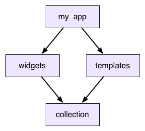
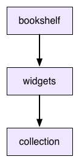

Package versioning
- A name and a number
- Resolving shared dependencies
- Semantic versions
- Constraint solving
- Constraint context
- Constraint solving for exported dependencies
- Lockfiles
- When things go wrong
- Summary
The pub package manager helps you work with versioning. This guide explains a bit about the history of versioning and pub's approach to it.
Consider this to be advanced information. To learn why pub was designed the way it was, keep reading. If you want to use pub, consult the other docs.
Modern software development, especially web development, leans heavily on reusing lots and lots of existing code. That includes code you wrote in the past, but also code from third-parties, everything from big frameworks to small utility libraries. It's not uncommon for an application to depend on dozens of different packages and libraries.
It's hard to understate how powerful this is. When you see stories of small web startups building a site in a few weeks that gets millions of users, the only reason they can achieve this is because the open source community has laid a feast of software at their feet.
But this doesn't come for free: There's a challenge to code reuse, especially reusing code you don't maintain. When your app uses code being developed by other people, what happens when they change it? They don't want to break your app, and you certainly don't either. We solve this problem by versioning.
A name and a number
#When you depend on some piece of outside code, you don't just say "My app uses widgets." You say, "My app uses widgets 2.0.5." That combination of name and version number uniquely identifies an immutable chunk of code. The people updating widgets can make all of the changes they want, but they promise to not touch any already released versions. They can put out 2.0.6 or 3.0.0 and it won't affect you one bit because the version you use is unchanged.
When you do want to get those changes, you can always point your app to a newer version of widgets and you don't have to coordinate with those developers to do it. However, that doesn't entirely solve the problem.
The version numbers discussed in this guide might differ from the version number set in the package filename. They might include -0 or -beta. These notations don't affect dependency resolution.
Resolving shared dependencies
#Depending on specific versions works fine when your dependency graph is really just a dependency tree. If your app depends on a bunch of packages, and those things in turn have their own dependencies and so on, that all works fine as long as none of those dependencies overlap.
Consider the following example:
So your app uses widgets and templates, and both of those use collection. This is called a shared dependency. Now what happens when widgets wants to use collection 2.3.5 and templates wants collection 2.3.7? What if they don't agree on a version?
Unshared libraries (the npm approach)
#One option is to just let the app use both versions of collection. It will have two copies of the library at different versions and widgets and templates will each get the one they want.
This is what npm does for node.js. Would it work for Dart? Consider this scenario:
collectiondefines someDictionaryclass.widgetsgets an instance of it from its copy ofcollection(2.3.5). It then passes it up tomy_app.my_appsends the dictionary over totemplates.- That in turn sends it down to its version of
collection(2.3.7). - The method that takes it has a
Dictionarytype annotation for that object.
As far as Dart is concerned, collection 2.3.5 and collection 2.3.7 are entirely unrelated libraries. If you take an instance of class Dictionary from one and pass it to a method in the other, that's a completely different Dictionary type. That means it will fail to match a Dictionary type annotation in the receiving library. Oops.
Because of this (and because of the headaches of trying to debug an app that has multiple versions of things with the same name), we've decided npm's model isn't a good fit.
Version lock (the dead end approach)
#Instead, when you depend on a package, your app only uses a single copy of that package. When you have a shared dependency, everything that depends on it has to agree on which version to use. If they don't, you get an error.
That doesn't actually solve your problem though. When you do get that error, you need to be able to resolve it. So let's say you've gotten yourself into that situation in the previous example. You want to use widgets and templates, but they are using different versions of collection. What do you do?
The answer is to try to upgrade one of those. templates wants collection 2.3.7. Is there a later version of widgets that you can upgrade to that works with that version?
In many cases, the answer will be "no". Look at it from the perspective of the people developing widgets. They want to put out a new version with new changes to their code, and they want as many people to be able to upgrade to it as possible. If they stick to their current version of collection then anyone who is using the current version widgets will be able to drop in this new one too.
If they were to upgrade their dependency on collection then everyone who upgrades widgets would have to as well, whether they want to or not. That's painful, so you end up with a disincentive to upgrade dependencies. That's called version lock: everyone wants to move their dependencies forward, but no one can take the first step because it forces everyone else to as well.
Version constraints (the Dart approach)
#To solve version lock, we loosen the constraints that packages place on their dependencies. If widgets and templates can both indicate a range of versions for collection that they work with, then that gives us enough wiggle room to move our dependencies forward to newer versions. As long as there is overlap in their ranges, we can still find a single version that makes them both happy.
This is the model that bundler follows, and is pub's model too. When you add a dependency in your pubspec, you can specify a range of versions that you can accept. If the pubspec for widgets looked like this:
dependencies:
collection: '>=2.3.5 <2.4.0'You could pick version 2.3.7 for collection. A single concrete version would satisfy constraints for both the widgets and templates packages.
Semantic versions
#When you add a dependency to your package, you'll sometimes want to specify a range of versions to allow. How do you know what range to pick? You need to be forward compatible, so ideally the range encompasses future versions that haven't been released yet. But how do you know your package is going to work with some new version that doesn't even exist yet?
To solve that, you need to agree on what a version number means. Imagine that the developers of a package you depend on say, "If we make any backwards incompatible change, then we promise to increment the major version number." If you trust them, then if you know your package works with 2.3.5 of theirs, you can rely on it working all the way up to 3.0.0. You can set your range like:
dependencies:
collection: ^2.3.5To make this work, then, we need to come up with that set of promises. Fortunately, other smart people have done the work of figuring this all out and named it semantic versioning.
That describes the format of a version number, and the exact API behavioral differences when you increment to a later version number. Pub requires versions to be formatted that way, and to play well with the pub community, your package should follow the semantics it specifies. You should assume that the packages you depend on also follow it. (And if you find out they don't, let their authors know!)
Although semantic versioning doesn't promise any compatibility between versions prior to 1.0.0, the Dart community convention is to treat those versions semantically as well. The interpretation of each number is just shifted down one slot: going from 0.1.2 to 0.2.0 indicates a breaking change, going to 0.1.3 indicates a new feature, and going to 0.1.2+1 indicates a change that doesn't affect the public API. For simplicity's sake, avoid using + after the version reaches 1.0.0.
We've got almost all of the pieces we need to deal with versioning and API evolution now. Let's see how they play together and what pub does.
Constraint solving
#When you define your package, you list its immediate dependencies. These are packages that your package uses. For each of these package, you specify the range of versions your package allows. Each of those dependent packages might then have their own dependencies. These are called transitive dependencies. Pub traverses these and builds the entire dependency graph for your app.
For each package in the graph, pub looks at everything that depends on it. It gathers together all of their version constraints and tries to simultaneously solve them. Basically, it intersects their ranges. Then pub looks at the actual versions that have been released for that package and selects the most recent one that meets all of those constraints.
For example, let's say our dependency graph contains collection, and three packages depend on it. Their version constraints are:
>=1.7.0
^1.4.0
<1.9.0The developers of collection have released these versions of it:
1.7.0
1.7.1
1.8.0
1.8.1
1.8.2
1.9.0The highest version number that fits in all of those ranges is 1.8.2, so pub picks that. That means your app and every package your app uses will all use collection 1.8.2.
Constraint context
#The fact that selecting a package version takes into account every package that depends on it has an important consequence: the specific version that will be selected for a package is a global property of the app using that package.
The following example shows what this means. Let's say we have two apps. Here are their pubspecs:
name: my_app
dependencies:
widgets:name: other_app
dependencies:
widgets:
collection: '<1.5.0'They both depend on widgets, whose pubspec is:
name: widgets
dependencies:
collection: '>=1.0.0 <2.0.0'The other_app package depends directly on collection itself. The interesting part is that it happens to have a different version constraint on it than widgets does.
This means that you can't just look at the widgets package in isolation to figure out what version of collection it will use. It depends on the context. In my_app, widgets will use collection 1.9.9. But in other_app, widgets will get saddled with collection 1.4.9 because of the other constraint that otherapp places on it.
This is why each app gets its own package_config.json file: The concrete version selected for each package depends on the entire dependency graph of the containing app.
Constraint solving for exported dependencies
#Package authors must define package constraints with care. Consider the following scenario:
The bookshelf package depends on widgets. The widgets package, currently at 1.2.0, exports collection via export 'package:collection/collection.dart', and is at 2.4.0. The pubspec files are as follows:
name: bookshelf
dependencies:
widgets: ^1.2.0name: widgets
dependencies:
collection: ^2.4.0The collection package is then updated to 2.5.0. The 2.5.0 version of collection includes a new method called sortBackwards(). bookshelf may call sortBackwards(), because it's part of the API exposed by widgets, despite bookshelf having only a transitive dependency on collection.
Because widgets has an API that is not reflected in its version number, the app that uses the bookshelf package and calls sortBackwards() may crash.
Exporting an API causes that API to be treated as if it is defined in the package itself, but it can't increase the version number when the API adds features. This means that bookshelf has no way of declaring that it needs a version of widgets that supports sortBackwards().
For this reason, when dealing with exported packages, it's recommended that the package's author keeps a tighter limit on the upper and lower bounds of a dependency. In this case, the range for the widgets package should be narrowed:
name: bookshelf
dependencies:
widgets: '>=1.2.0 <1.3.0'name: widgets
dependencies:
collection: '>=2.4.0 <2.5.0'This translates to a lower bound of 1.2.0 for widgets and 2.4.0 for collection. When someone releases the 2.5.0 version of collection, pub updates widgets to 1.3.0 and updates the corresponding constraints as well.
Using this convention ensures that users have the correct version of both packages, even if one is not a direct dependency.
Lockfiles
#So once pub has solved your app's version constraints, then what? The end result is a complete list of every package that your app depends on either directly or indirectly and the best version of that package that will work with your app's constraints.
For each package, pub takes that information, computes a content hash from it, and writes both to a lockfile in your app's directory called pubspec.lock. When pub builds the .dart_tool/package_config.json file for your app, it uses the lockfile to know what versions of each package to refer to. (And if you're curious to see what versions it selected, you can read the lockfile to find out.)
The next important thing pub does is it stops touching the lockfile. Once you've got a lockfile for your app, pub won't touch it until you tell it to. This is important. It means you won't spontaneously start using new versions of random packages in your app without intending to. Once your app is locked, it stays locked until you manually tell it to update the lockfile.
If your package is for an app, you check your lockfile into your source control system! That way, everyone on your team will be using the exact same versions of every dependency when they build your app. You'll also use this when you deploy your app so you can ensure that your production servers are using the exact same packages that you're developing with.
When things go wrong
#Of course, all of this presumes that your dependency graph is perfect and flawless. Even with version ranges and pub's constraint solving and semantic versioning, you can never be entirely spared from the dangers of versionitis.
You might run into one of the following problems:
You can have disjoint constraints
#Lets say your app uses widgets and templates and both use collection. But widgets asks for a version of it between 1.0.0 and 2.0.0 and templates wants something between 3.0.0 and 4.0.0. Those ranges don't even overlap. There's no possible version that would work.
You can have ranges that don't contain a released version
#Let's say after putting all of the constraints on a shared dependency together, you have a narrow range of >=1.2.4 <1.2.6. It's not an empty range. If there was a version 1.2.4 of the dependency, you'd be golden. But maybe they never released that version. Instead, they went straight from 1.2.3 to 1.3.0. You've got a range with nothing inside it.
You can have an unstable graph
#This is, by far, the most challenging part of pub's version solving process. The process was described as build up the dependency graph and then solve all of the constraints and pick versions. But it doesn't actually work that way. How could you build up the whole dependency graph before you've picked any versions? The pubspecs themselves are version-specific. Different versions of the same package may have different sets of dependencies.
As you're selecting versions of packages, they are changing the shape of the dependency graph itself. As the graph changes, that may change constraints, which can cause you to select different versions, and then you go right back around in a circle.
Sometimes this process never settles down into a stable solution. Gaze into the abyss:
name: my_app
version: 0.0.0
dependencies:
yin: '>=1.0.0'name: yin
version: 1.0.0
dependencies:name: yin
version: 2.0.0
dependencies:
yang: '1.0.0'name: yang
version: 1.0.0
dependencies:
yin: '1.0.0'In all of these cases, there is no set of concrete versions that will work for your app, and when this happens pub reports an error and tells you what's going on. It definitely won't leave you in some weird state where you think things can work but won't.
Summary
#In summary:
- Though code reuse has advantages, packages require the ability to evolve independently.
- Versioning enables that independence. Depending on single concrete versions lacks flexibility. Coupled with shared dependencies, it leads to version lock.
- To cope with version lock, your package should depend on a range of versions. Pub then walks your dependency graph and picks the best versions for you. If it can't pick an appropriate version, pub alerts you.
- Once your app has a solid set of versions for its dependencies, that set gets pinned down in a lockfile. That ensures that every machine running your app uses the same versions of all of its dependencies.
To learn more about pub's version solving algorithm, consult the PubGrub article on Medium.
Unless stated otherwise, the documentation on this site reflects Dart 3.6.0. Page last updated on 2024-11-18. View source or report an issue.